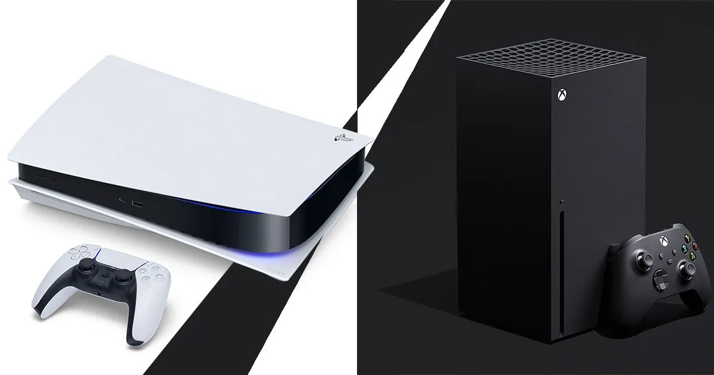

GTA 6
GTA 6 has been officially revealed, with the debut trailer now having been released. We now know that the game will be coming in 2025, and that it is indeed set in Vice City.
The GTA 6 trailer was revealed by Rockstar on December 4, 2023, after it leaked online. The trailer was initially scheduled for release the following day, but timelines were shifted. You can check it out above, in all its sun-drenched glory. It's 91 seconds long, and introduces us to Lucia, one of GTA 6's main protagonists. You'll also get some gorgeous shots of Vice City beaches, bars, and even an alligator
GTA 6 platforms: PS5 and Xbox Series X/S confirmed
So far, it has been confirmed that GTA 6 will be coming to PS5 and Xbox Series X/S when it arrives. The news came by way of an official press release from Take Two, which states that: "GTA 6 is coming to PlayStation 5 computer entertainment systems and Xbox Series X|S games and entertainment systems in 2025". There's currently no mention of a PC launch, which might suggest it will follow a similar route to some of the previous GTA games that released on consoles first, before arriving on PC at a later date.

GTA 6 Story And Playable Characters
Rockstar Games revealed the first trailer for GTA 6 on December 4,2023. In it, we're introduced to Lucia, the main protagonist of GTA 6. According to the leaked gameplay that popped up online early in 2023, GTA 6 could feature two protagonists. This is backed up by what's shown in the trailer, with Lucia and her partner, currently unnamed, shown pulling off robberies together.

Developed by Rockstar Games and Releasing 2025 for PS5 And Xbox.